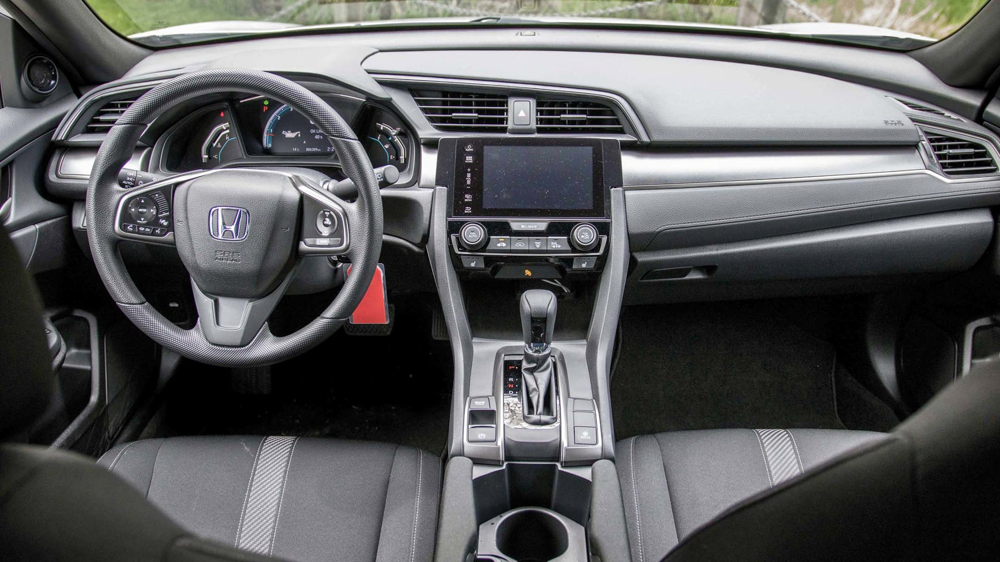
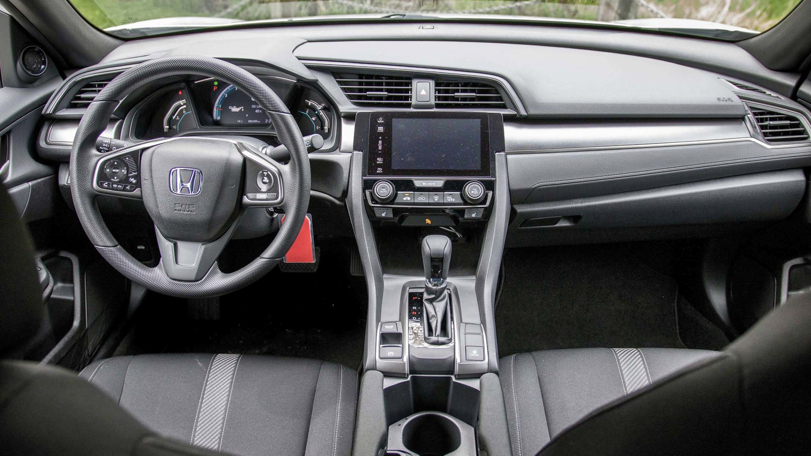

Maintenance Tips
- Oil Change: Every 7,500 miles or 12 months.
- Tire Rotation: Every 5,000-7,500 miles for even wear.
- Brake Inspection: Check pads every 15,000 miles.
- Air Filter: Replace every 30,000 miles or as needed.

Style, Efficiency, and Reliability in One Package
2.0L 4-Cylinder, 158 hp @ 6500 rpm, 138 lb-ft @ 4200 rpm
28 city / 40 highway / 32 combined (6-speed manual)
31 city / 40 highway / 34 combined (CVT)
Length: 182.3 in, Height: 55.7 in, Weight: ~2749 lbs
6-speed manual or CVT
15.1 cu.ft (trunk)
6 airbags, Multi-angle rearview camera, Vehicle Stability Assist
 


"The 2017 Civic LX in grey is a fantastic daily driver. Great gas mileage, reliable, and the manual transmission is a joy to drive!" - Alex, Owner